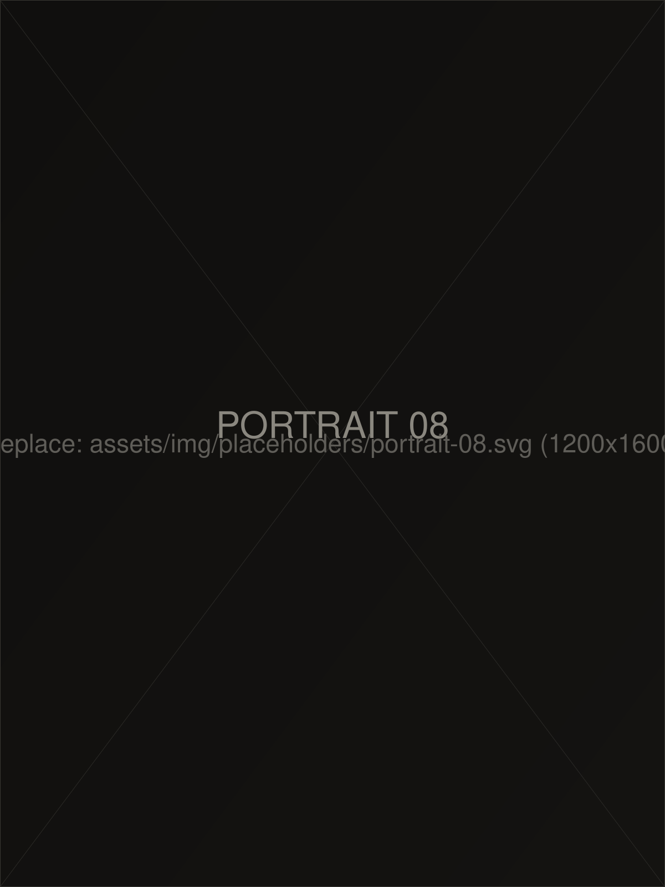
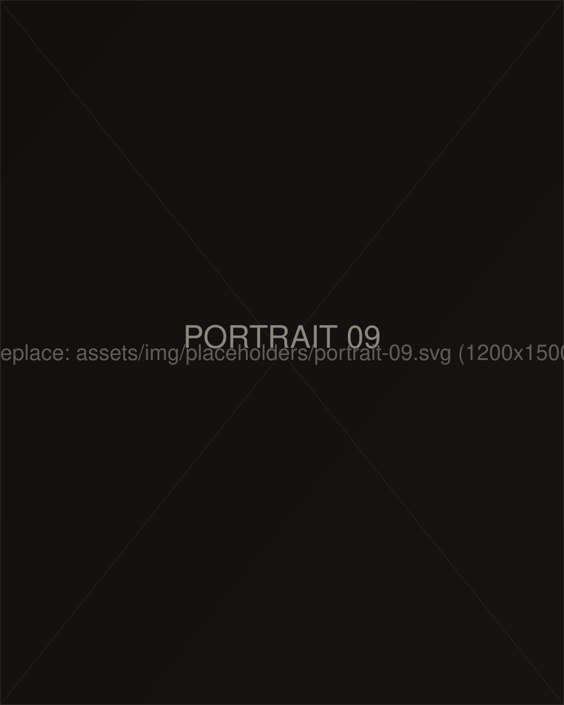
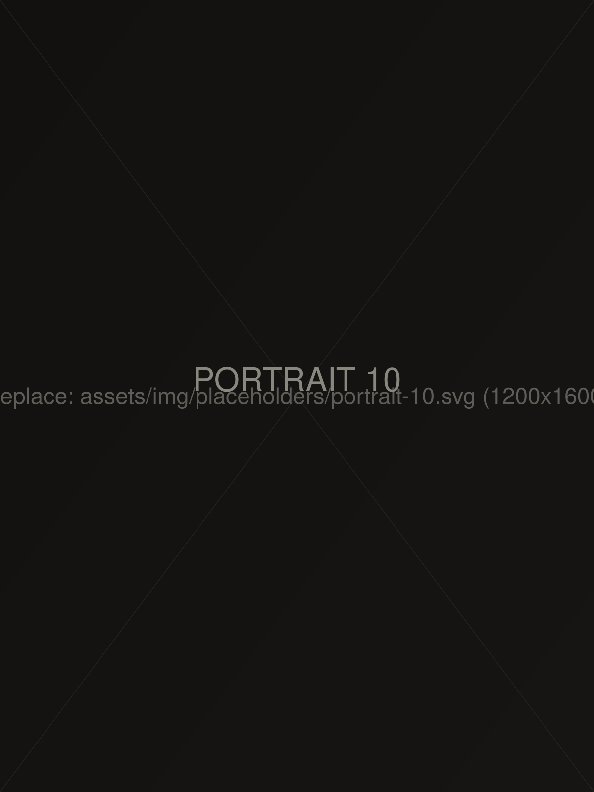

Genre 04
Portrait
Large-format verticals with generous space around every frame — letting each subject hold the page alone.
10 photographs
![[Describe portrait 01]](../assets/img/placeholders/portrait-01.svg)
![[Describe portrait 02]](../assets/img/placeholders/portrait-02.svg)
![[Describe portrait 03]](../assets/img/placeholders/portrait-03.svg)
![[Describe portrait 04]](../assets/img/placeholders/portrait-04.svg)
![[Describe portrait 05]](../assets/img/placeholders/portrait-05.svg)
![[Describe portrait 06]](../assets/img/placeholders/portrait-06.svg)
![[Describe portrait 07]](../assets/img/placeholders/portrait-07.svg)


